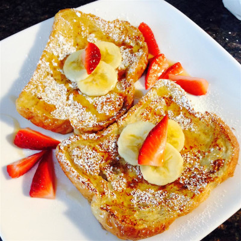

Old Fashioned Pancakes

Ingredients:
- 3 eggs
- 0,25 cups all-purpose flour
- 1 cup milk
- 0,5 teaspoon ground cinnamon
- 1 tablespoon sugar
- 12 thic slices bread
- 1 pinch salt
- 1 teaspoon vanilla extract
Directions:
- Measure flour into a large mixing bowl. Slowly whisk in milk. Whisk in eggs, sugar, vanilla extract, cinnamon, and salt until smooth.
- Heat a lightly oiled griddle or frying pan over medium heat.
- Soak bread slices in milk mixture until saturated.
- Working in batches, cook bread on the preheated griddle or pan until golden brown on each side. Serve hot.
Back to homepage